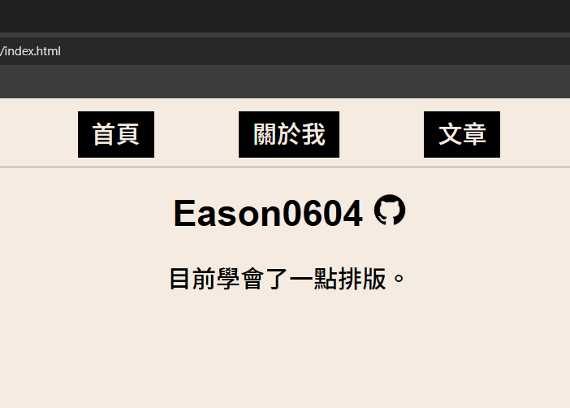

建立這個blog的紀錄
2026/7/9
我最近在FreeCodeCamp上學了一點HTML，於是我決定要著手創建我的blog；然而我尚未學習CSS，所以我的排版慘不忍睹，於是我決定要開始學CSS。

2026/7/10
初學CSS，我的美感有待加強，但我終於做出了能看的blog頁面。

我最近在FreeCodeCamp上學了一點HTML，於是我決定要著手創建我的blog；然而我尚未學習CSS，所以我的排版慘不忍睹，於是我決定要開始學CSS。
初學CSS，我的美感有待加強，但我終於做出了能看的blog頁面。
